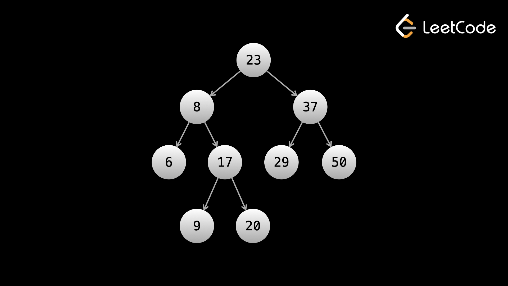

Бинарное дерево поиска (BST) — это тип двоичного дерева. BST обладает следующим свойством:
Для каждого узла все значения в его левом поддереве меньше значения в узле, а все значения в его правом поддереве больше значения в узле.
Ниже приведен пример BST:

С помощью двоичного дерева поиска такие операции, как поиск, добавление и удаление, можно выполнять в O(log n) время в среднем, где n — количество узлов в дереве, полученное с помощью так называемого двоичного поиска, которому посвящена следующая глава.
Допустим, у вас есть указанное выше дерево, и вы хотите проверить, существует ли значение 20. Начиная с корня, мы видим, что 23 > 20. Это означает, что мы можем игнорировать правое поддерево, поскольку каждое значение в поддереве также будет больше 20. Мы начинаем поиск в левом поддереве. На следующем шаге 20 > 8, так что теперь мы можем игнорировать левое поддерево и двигаться вправо. Далее 20 > 17, поэтому мы снова можем игнорировать левое поддерево. Наконец, мы находим цифру 20, снова двигаясь вправо.
Этот процесс имеет среднюю временную сложность О(log n). В худшем случае, скажем, с деревом, у которого не было правильных дочерних элементов и которое представляло собой просто прямую линию (по сути, связанный список), временная сложность будет равна O(n). Давайте рассмотрим некоторые вопросы, специфичные для BST.
Интересный факт: inorder обход DFS с приоритетом слева перед правом на BST будет обрабатывать узлы в отсортированном порядке.
Пример 1: Сумма диапазона BST
Дан root двоичного дерева поиска и два целых числа, low и high,
верните сумму значений всех узлов
со значением в включающем диапазоне [low, high].
Тривиальным подходом было бы выполнить обычную BFS или DFS, посетить каждый узел и добавить в сумму только те узлы, значения которых находятся между low и high. Однако мы можем использовать свойство BST для разработки более эффективного алгоритма. В BST каждый узел имеет значение больше, чем все узлы в левом поддереве, и значение меньше, чем все узлы в правом поддереве. Следовательно, если значение текущего узла меньше low, мы знаем, что бессмысленно проверять левое поддерево, поскольку все узлы в левом поддереве будут вне диапазона. Аналогично, если значение текущего узла больше high, бессмысленно проверять правое поддерево. Эта оптимизация может сэкономить потенциально огромное количество вычислений.
class Solution:
def rangeSumBST(self, root: Optional[TreeNode], low: int, high: int) -> int:
if not root:
return 0
ans = 0
if low <= root.val <= high:
ans += root.val
if low < root.val:
ans += self.rangeSumBST(root.left, low, high)
if root.val < high:
ans += self.rangeSumBST(root.right, low, high)
return ans
Итеративная версия:
class Solution:
def rangeSumBST(self, root: Optional[TreeNode], low: int, high: int) -> int:
stack = [root]
ans = 0
while stack:
node = stack.pop()
if low <= node.val <= high:
ans += node.val
if node.left and low < node.val:
stack.append(node.left)
if node.right and node.val < high:
stack.append(node.right)
return ans
Хотя временная сложность все еще O(n) для случая, когда все узлы в дереве находятся между low и high, в среднем этот алгоритм будет работать лучше, чем простой поиск всех узлов. Например, если у вас было полное дерево с миллионом узлов, а значение корня было больше high, то вы можете немедленно сохранить 500 000 посещений, основываясь на логике, что все узлы в правом поддереве больше, чем значение root, которое уже вне диапазона.
Пространственная сложность O(n) для стека вызовов/стека рекурсии.
Пример 2:
Минимальная абсолютная разница в BST
Дан root BST, верните минимальную абсолютную разницу между значениями любых двух разных узлов в
дереве.
Один из подходов — пройтись по дереву и поместить все значения в массив, а затем перебрать все пары массива, чтобы найти минимальную разницу. Это было бы O(n*2). Лучшим подходом было бы отсортировать массив, а затем перебрать соседние элементы. Ответ должен находиться между соседними элементами отсортированного массива, поэтому это снижает временную сложность O(n⋅logn) из-за сортировки. Можем ли мы добиться большего?
Как кратко упоминалось ранее в этой статье, если вы выполняете inorder обход BST, вы будете посещать узлы в отсортированном порядке. Следовательно, если мы выполним inorder DFS, мы сможем получить узлы в отсортированном порядке без O(n⋅logn) сортировки, в результате чего общая временная сложность равна O(n).
Мы передадим массив values в нашу функцию dfs. Чтобы выполнить обход inorder, мы сначала вызываем левый дочерний элемент, затем добавляем текущее значение к values, а затем вызываем правый дочерний элемент. Это добавит значения в отсортированном порядке.
class Solution:
def getMinimumDifference(self, root: Optional[TreeNode]) -> int:
def dfs(node):
if not node:
return
left = dfs(node.left)
values.append(node.val)
right = dfs(node.right)
values = []
dfs(root)
ans = float("inf")
for i in range(1, len(values)):
ans = min(ans, values[i] - values[i - 1])
return ans
Ранее мы упоминали, что для итеративной DFS preorder выполняется легко, а два других сложнее. Вот итеративное решение, которое включает в себя обход inorder:
class Solution:
def getMinimumDifference(self, root: Optional[TreeNode]) -> int:
def iterative_inorder(root):
stack = []
values = []
curr = root
while stack or curr:
if curr:
stack.append(curr)
curr = curr.left
else:
curr = stack.pop()
values.append(curr.val)
curr = curr.right
return values
values = iterative_inorder(root)
ans = float("inf")
for i in range(1, len(values)):
ans = min(ans, values[i] - values[i - 1])
return ans
Как видите, inorder DFS гораздо сложнее реализовать итеративно, чем рекурсивно. Таким образом, если когда-либо будет предоставлена такая возможность, вам следует придерживаться рекурсии. На собеседовании вас могут попросить применить оба подхода, поэтому, возможно, стоит запомнить процесс итеративного порядка, но это встречается редко.
Временная и пространственная сложность этого подхода O(n). Мы можем получить значения в отсортированном порядке за линейное время, воспользовавшись свойством BST.
Пример 3: Проверка двоичного дерева
поиска
Дан root двоичного дерева, определите, является ли оно допустимым BST.
Используя рекурсию, мы можем построить функцию dfs, которая принимает node и возвращает true, если дерево с корнем в node является BST. Во-первых, какие аргументы нам нужно передать (кроме узла)? В BST корневой узел может иметь любое значение, поскольку он не является дочерним элементом какого-либо узла, но каждый узел в левом поддереве должен быть меньше его, а каждый узел в правом поддереве должен быть больше его. Чтобы обеспечить это, мы можем использовать два целочисленных аргумента small и large и убедиться, что small < node.val < large сохраняется.
Если мы определяем (small, large) интервал допустимых значений, как нам обновить их, чтобы сохранить свойство BST? В каждом node узлы левого поддерева должны быть меньше node.val, чтобы мы могли обновить large = node.val. Правые узлы поддерева должны быть больше, чем node.val, чтобы мы могли обновить small = node.val. Для корневого узла мы можем инициализировать small = -infinity и large = infinity — корнем может быть любое значение, поскольку у него нет родителя.
Помните определение BST: «Предположим, в BST в любом заданном узле ваши данные равны val. Все данные в левом поддереве меньше val, а все данные в правом поддереве больше val». Поскольку «в любом заданном узле» это означает, что в BST все поддеревья также являются BST. Следовательно, учитывая входной node, нам нужно убедиться, что node.left и node.right также являются BST.
Что такое базовый случай? Пустое дерево (без узлов) технически является BST. Следовательно, мы можем вернуть true, когда текущий узел равен null.
Вспомним более ранний пример задачи, в которой нам нужно было определить, являются ли два дерева одним и тем же деревом. В этой задаче мы определили, что если узлы p и q представляют одно и то же дерево, то их левое и правое поддеревья также должны быть идентичны друг другу. Если дерево с корнем в node является двоичным деревом поиска, то node.left и node.right также должны быть двоичными деревьями поиска. Поскольку реализуемая нами функция isValidBST определяет, является ли дерево двоичным деревом поиска, у нас есть рекурсивный способ рассмотрения проблемы. isValidBST(node.left) && isValidBST(node.right) должно иметь значение true, а также значение текущего узла не должно нарушать свойство BST. Чтобы определить, нарушает ли значение узла свойство BST, мы можем использовать два аргумента small и large. Они представляют собой (эксклюзивный) диапазон [small, large], в который должно попадать значение узла. Если значение узла не находится в этом диапазоне, то оно нарушает свойство BST, и мы можем return False. Корневой узел может иметь любое значение, поэтому мы инициализируем small = -infinity и large = infinity. Каждый узел в левом поддереве корня должен быть меньше, чем root.val, поэтому, когда мы вызываем левое поддерево, мы можем передать big = root.val. Каждый узел в правом поддереве корня должен быть больше, чем root.val, поэтому, когда мы вызываем правое поддерево, мы можем передать small = root.val. Обновляя small и large таким образом, мы гарантируем, что ограничение, определяющее приемлемость значения узла, всегда будет точным, поскольку рекурсия будет сохранять копию small и large для каждого узла. В базовом случае, когда мы сталкиваемся с пустым деревом, мы возвращаем true. Опять же, подумайте о случае, когда входное дерево представляет собой один узел. Любой узел сам по себе является двоичным деревом поиска по определению, поэтому нам потребуются как isValidBST(root.left), так и isValidBST(root.right), чтобы return True, поэтому нам нужно пустое дерево, чтобы return True.
class Solution:
def isValidBST(self, root: Optional[TreeNode]) -> bool:
def dfs(node, small, large):
if not node:
return True
if not (small < node.val < large):
return False
left = dfs(node.left, small, node.val)
right = dfs(node.right, node.val, large)
# tree is a BST if left and right subtrees are also BSTs
return left and right
return dfs(root, float("-inf"), float("inf"))
Условием возврата в нашей функции является AND, т.е. все поддеревья также должны быть BST.
Итеративная версия:
class Solution:
def isValidBST(self, root: Optional[TreeNode]) -> bool:
stack = [(root, float("-inf"), float("inf"))]
while stack:
node, small, large = stack.pop()
if not (small < node.val < large):
return False
if node.left:
stack.append((node.left, small, node.val))
if node.right:
stack.append((node.right, node.val, large))
return True
Сложность времени и пространства O(n) по тем же причинам, что и все остальные примеры.